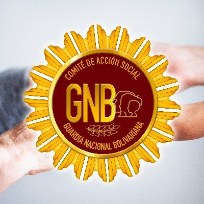
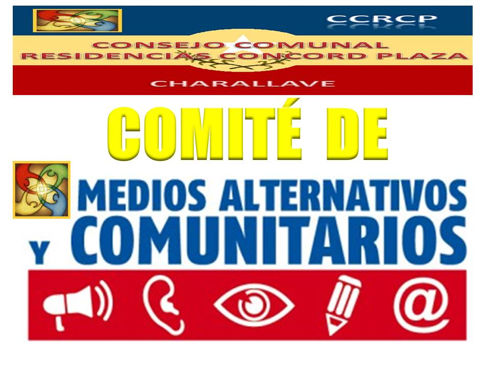
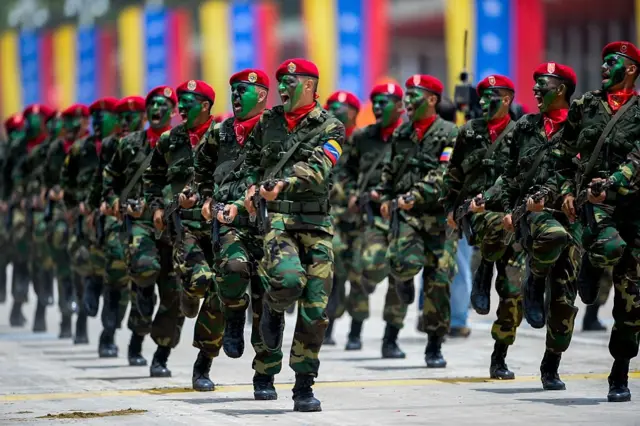

Comités Sociales
Un comité social es un grupo de personas que se unen para promover y gestionar actividades relacionadas con el bienestar social de una comunidad o grupo específico. Estos comités pueden abordar diversas áreas, como la organización de eventos,
la promoción de la cohesión social, el apoyo a iniciativas comunitarias, y la atención a necesidades sociales.
Las funciones de un comité social pueden incluir:
- Planificación de Eventos: Organizar actividades que fomenten la interacción entre los miembros de la comunidad, como fiestas, talleres o actividades recreativas.
- Identificación de Necesidades: Analizar y reconocer las necesidades sociales de los miembros de la comunidad para poder abordarlas adecuadamente.
- Promoción del Voluntariado: Fomentar la participación activa de los miembros en proyectos que beneficien a la comunidad.
- Trabajo Colaborativo: Colaborar con otras organizaciones o grupos para llevar a cabo iniciativas que mejoren el bienestar social.
- Comunicación: Servir como un canal de comunicación entre los miembros y las autoridades o entidades que puedan apoyar las iniciativas sociales.

Comité de Comunicación
Un Comité de Comunicación es un grupo de personas responsables de gestionar y coordinar todas las actividades relacionadas con la comunicación dentro de una organización, comunidad o proyecto. Su objetivo principal es asegurar que la información
fluya de manera efectiva entre los miembros, así como hacia el exterior, si es necesario.
- Desarrollo de Estrategias: Crear planes para mejorar la comunicación interna y externa, asegurando que todos los mensajes sean claros y coherentes.
- Gestión de Contenidos: Supervisar la creación y distribución de materiales informativos, como boletines, comunicados de prensa, publicaciones en redes sociales y otros medios.
- Relaciones Públicas: Establecer y mantener relaciones con medios de comunicación y otros grupos externos para promover la imagen y objetivos de la organización.
- Coordinación de Eventos: Organizar eventos que ayuden a difundir información o a promover la interacción entre diferentes partes interesadas.
- Manejo de Crisis: Desarrollar planes para comunicar en situaciones críticas o de crisis, asegurando que la información se gestione adecuadamente para evitar malentendidos.
- Evaluación y Retroalimentación: Medir la efectividad de las estrategias de comunicación implementadas y recoger opiniones para mejorar continuamente.

Comité Militar
Este comité se encarga de coordinar acciones relacionadas con asuntos militares y de defensa dentro de una organización, comunidad o país. Dependiendo del contexto, puede tener diferentes funciones y responsabilidades, pero en general, sus objetivos
suelen incluir:
- Planificación Estratégica: Desarrollar estrategias para la defensa y la seguridad, asegurando que se tomen en cuenta las amenazas potenciales.
- Coordinación de Recursos: Organizar y gestionar los recursos militares, incluyendo personal, equipamiento y logística, para garantizar que estén disponibles cuando se necesiten.
- Formación y Capacitación: Supervisar programas de formación para el personal militar, asegurando que estén preparados para cumplir con sus funciones.
- Relaciones Internacionales: En algunos casos, el Comité Militar puede participar en la cooperación con otros países o fuerzas armadas para realizar ejercicios conjuntos o intercambiar información.
- Evaluación de Amenazas: Analizar situaciones de riesgo o conflicto que puedan afectar la seguridad nacional o regional y proponer medidas preventivas o reactivas.
- Toma de Decisiones: Actuar como un órgano consultivo para los líderes políticos en cuestiones relacionadas con la defensa y las operaciones militares.
